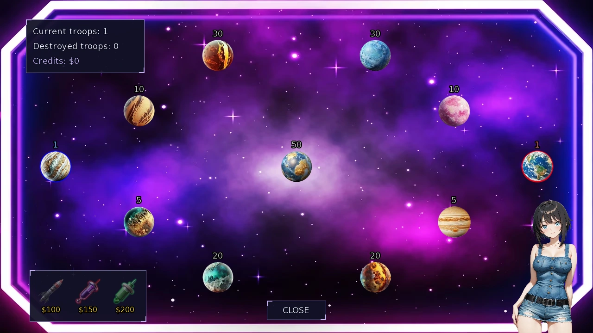
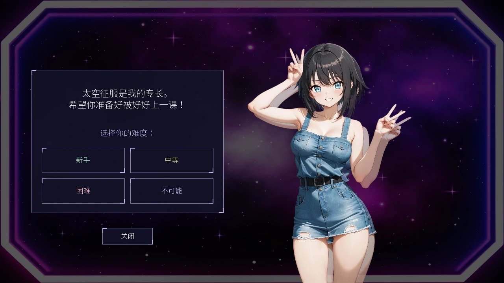

Select a screenshot to enlarge it. Screens show example inventories and progress.
Farm targets and a planetary strategy game
Cucker-Chucker is a short aiming game at the Rural Farm. Invading Space is Rei’s real-time conquest game at the Downtown Arcade. Their timers, score, local currency and relationship rewards work differently; neither spends tower-defense Ammo or Command.
Start Cucker-Chucker
At Medieval → Kings Demesne → Rural Farm, complete The Cuckers Return: visit 09:00–17:00 with Wilfred at Known (25), Honey at Acquaintance (50), and Honey not on vacation. The location action is then available from 08:00 to 19:00. Base cost is 30 game minutes and 20 Energy. Aim with the mouse and click to throw stones at the moving birds; each hit adds 1 score.
A round lasts about 26 real seconds. Rocks travel toward the crosshair rather than arriving instantly, so lead moving targets. Higher base Ability improves the crosshair’s response; at Ability 90+ it follows the pointer directly. Quick Draw halves the basic throw cooldown from 10 to 5 update steps. Each ranged-weapon level then reduces that base cooldown by another 5%, with fractions discarded.
Score and farm rewards
The result text changes at 10, 20 and 30 hits. These are performance messages, not four escalating stat rewards. Exiting the game currently gives 3 base affection each to Wilfred and Honey, through normal relationship modifiers, rather than paying affection per bird. Hits also count toward the long-term total. Avoid confusing the 30-minute world-clock action with its much shorter real-time round.
Challenge Rei in Invading Space
Visit Present → Downtown → Arcade and find Rei from 15:00 to 22:00. The challenge requires Acknowledged (10 affection), costs 30 game minutes and $10, and has three positive uses per day. Her current availability and participant restrictions still apply. Choose Novice, Intermediate, Hard or NOPE! before the match.
You own blue planets, Rei owns red planets and neutral planets have no owner. Win by capturing every red-owned planet; you do not need every neutral planet. A missile reducing a red garrison to zero does not change its ownership. Losing your last blue planet ends the game even if ships are still moving.
Send fleets, grow and upgrade planets
Select or drag from a blue planet to another planet to send about half its current troops, rounded to a whole number. You need more than 1 troop at the source. Friendly arrivals reinforce; hostile arrivals fight the garrison. Level 2 and 3 defenders first remove up to 10 attackers. Level 3 also changes surviving forces by 20% in the defender’s favour. Captured planets reset to level 1; an exact combat tie still transfers ownership with zero troops.
| Planet level | Troops generated each second | Upgrade cost |
|---|---|---|
| 1 | 1 | 50 match Credits to reach level 2 |
| 2 | 2 | 100 match Credits to reach level 3 |
| 3 | 3 | Maximum level |
Troops cap at 9,999 per planet. Credits are match currency, not the player’s Wealth; the Chinese interface calls them 点数. Combat earns Credits, including conquest and defence bonuses. A coin appears every 13 seconds; collect it before its difficulty-dependent display window ends, or Rei receives it. Incoming spiders halve a planet’s troops, while its owner receives 20 match Credits.

Power-ups and their cooldowns
| Power-up | Match Credits | Effect | Cooldown |
|---|---|---|---|
| Missile | 100 | All non-blue planets lose 25% of troops, with at least 1 removed when possible | 15 sec |
| Speed | 150 | Your planets grow at double speed for 7 seconds | 15 sec |
| Poison | 200 | Stops opposing growth for 6 seconds | 15 sec |
| Cheating skill button | Free | Doubles your planets’ troops, capped at 9,999 | 60 sec |
The fourth button appears only after learning Cheating. This is the skill’s existing minigame effect. Missile damage includes neutral planets, but it does not capture them. Cooldowns and buffs are local to this match.
Difficulty and Rei affection
| Difficulty | Win: base affection | Loss: base affection | Coin display window |
|---|---|---|---|
| Novice | 8 | 1 | 5 sec |
| Intermediate | 13 | 2 | 4 sec |
| Hard | 20 | 3 | 3 sec |
| NOPE! | 35 | 4 | 2 sec |
Finishing a win also records a Space victory; a NOPE! win satisfies Rei’s special victory milestone. Quitting early gives −1 base affection and still uses the chosen challenge. Normal relationship modifiers apply. Spend a first attempt learning expansion, upgrades and coin collection, then compare the next difficulty when you can protect your home planet.
农场打靶与行星策略游戏
「打击鸡妖」是乡村农场的短时瞄准游戏，「入侵太空」则是Rei在市中心街机厅提供的即时行星征服游戏。两者的计时、分数、局内货币与好感奖励不同，也不会消耗塔防的弹药或指挥点。
开始打击鸡妖
在中世纪 → 国王领地 → 乡村农场，先使Wilfred达到已知（25）、Honey达到相识（50），并在Honey未休假时于09:00–17:00进入农场，完成「鸡妖归来」。之后可在08:00–19:00使用地点行动。基础消耗为游戏时间30分钟与20精力。用鼠标瞄准、点击投石，击中一只增加1分。
每轮约持续现实时间26秒。石块会飞向准星位置，并非瞬间命中，因此要预判移动目标。基础能力越高，准星跟随越快；能力90以上会直接跟随指针。快速拔枪把基础投掷冷却从10个更新步缩短为5个；远程武器每级再按基础冷却减少5%，之后向下取整。
分数与农场奖励
命中10、20、30只时，结算评价会变化；这些是表现评价，不是四档递增的属性奖励。退出游戏时，目前分别给Wilfred与Honey各3基础好感，再应用正常关系加成，并非每只鸡妖都发一份好感。命中也计入长期总数。行动消耗的游戏时间30分钟，与较短的现实回合计时不同。
在入侵太空中挑战Rei
前往现代 → 市中心 → 街机厅，在15:00–22:00找到Rei。挑战要求已遇见（10好感），消耗游戏时间30分钟与10财富，每天有三次正向互动额度；仍须符合她当前的可参与状态。开局选择「新手」「中等」「困难」或「不可能」。
你控制蓝色行星，Rei控制红色行星，中立行星没有所属。占领全部红色行星即可获胜，不必占完所有中立星球。导弹把红色驻军降到零，并不会改变行星所属；自己失去最后一颗蓝星，即使舰队还在途中，也会结束比赛。

派兵、增长与行星升级
从蓝色行星选择或拖向另一颗行星，会派出当前约一半兵力，取整后出发；起点需至少有2名部队。抵达友方星球是增援，抵达其他星球则与驻军交战。2级、3级守方先消灭最多10名来袭部队；3级还会把战后存活兵力按20%向有利于守方的方向调整。被占领行星重置为1级；交战恰好打平时，也会转移所属，驻军为零。
| 行星等级 | 每秒增长兵力 | 升级费用 |
|---|---|---|
| 1 | 1 | 50局内点数升至2级 |
| 2 | 2 | 100局内点数升至3级 |
| 3 | 3 | 已达上限 |
每颗行星兵力上限9,999。界面中的「点数」是本局货币，与玩家财富分开；战斗、占领与防守可获得点数。每13秒出现金币，在对应难度的显示时间内拾取，否则由Rei取得。到达行星的蜘蛛会使驻军减半，同时给该星球所属方20局内点数。
道具效果与冷却
| 道具 | 局内点数 | 效果 | 冷却 |
|---|---|---|---|
| 导弹 | 100 | 全部非蓝色行星损失25%兵力；仍有兵力时至少损失1名 | 15秒 |
| 加速 | 150 | 己方行星增长速度翻倍，持续7秒 | 15秒 |
| 毒素 | 200 | 停止敌方增长，持续6秒 | 15秒 |
| 作弊技能按钮 | 免费 | 己方各星球兵力翻倍，最多9,999 | 60秒 |
学会「作弊」技能后才会出现第四按钮，这是该技能原有的小游戏效果。导弹也影响中立星球，但不会直接占领它们。冷却与加成仅用于本局。
难度与Rei好感
| 难度 | 获胜：基础好感 | 落败：基础好感 | 金币显示时长 |
|---|---|---|---|
| 新手 | 8 | 1 | 5秒 |
| 中等 | 13 | 2 | 4秒 |
| 困难 | 20 | 3 | 3秒 |
| 不可能 | 35 | 4 | 2秒 |
获胜也会记录太空游戏胜场；「不可能」获胜满足Rei的对应特殊胜利里程碑。提前退出为−1基础好感，本次挑战仍已使用。正常关系加成照常生效。首轮可先熟悉扩张、升级与抢金币，能守住母星后再考虑更高难度。
CC BY-SA 4.0. Game images © Chronoromancer Studio.